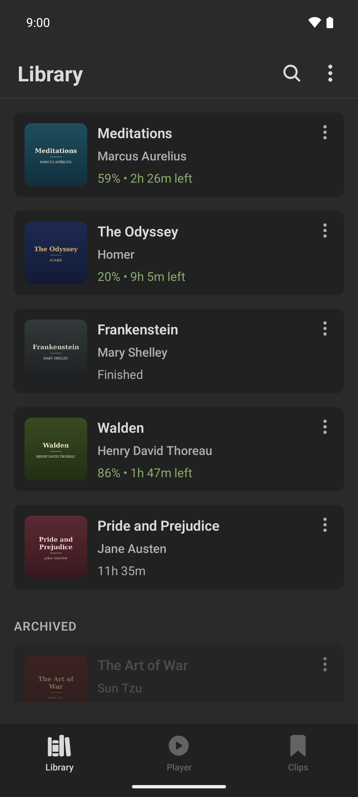
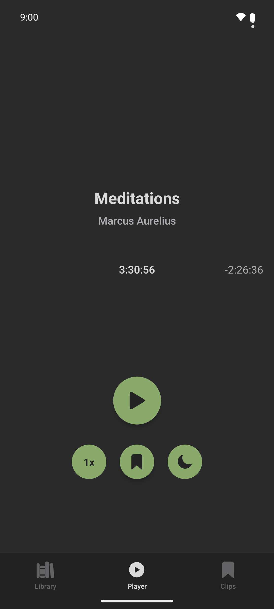
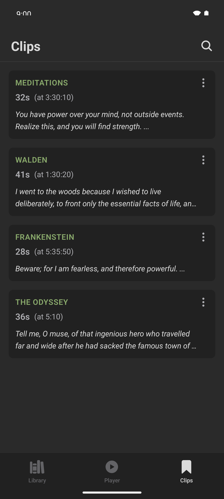

Your library, your files
Import audiobooks and podcasts straight from your device. Ivy keeps its own copies, remembers where you left off in every book, and picks up right where you stopped — even across devices.

A player built for long listens
A smooth, zoomable timeline makes scrubbing through hours of audio effortless. Chapters, playback speed, and full support for lock screen and Bluetooth controls.

Clip the moments worth keeping
Save passages as standalone audio clips. Add notes, get automatic on-device transcriptions, and share clips with anyone — no account needed, nothing leaves your phone unless you say so.